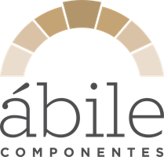
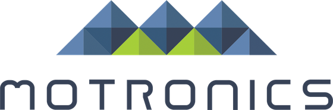
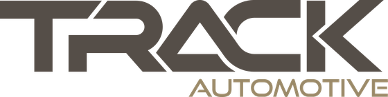

Não é portfólio: é a casa de clientes que aplica a metodologia da Atto em regime contínuo. Indústria, distribuição e serviços técnicos, de diferentes portes, com relação construída ao longo dos anos e operação saindo do papel mês a mês.
Empresas atendidas a partir de Caxias do Sul com alcance nacional. Porte variado, setores distintos, mesma referência de método: diagnóstico, direção e rotina em operação contínua.





Cada depoimento abaixo é textual, revisado e assinado pelo cliente. Quando o cliente opta pelo formato anônimo, indicamos o setor, o estado e o porte, mantendo a essência da fala sem expor a empresa.
A estruturação da empresa saiu do discurso e virou rotina. Painel gerencial, reunião de performance, política de preço escrita. Tudo rodando num ritmo que a casa aguenta. Foi a primeira vez que a diretoria conseguiu enxergar o próprio negócio em alta definição.
Entramos em operação de recuperação com o caixa no sufoco e a leitura financeira inexistente. A Atto reconstruiu a DRE gerencial, renegociou banking, instalou o capital de giro previsível. Em dois trimestres o negócio voltou a respirar.
A preparação de lideranças foi o trabalho mais silencioso e o mais transformador. Gerentes que esperavam autorização para tudo passaram a conduzir reunião com dono, número e decisão. A sucessão dentro da casa deixou de ser promessa e virou plano.
Turnaround bem-sucedido não é sorte: é método. A Atto entrou com leitura honesta, prioridade escrita e cobrança semanal. Doze meses depois, a empresa era outra: margem recomposta, time recalibrado, conversa com banco em posição confortável.
Os casos abaixo são baseados em relações reais, com detalhes alterados ou suprimidos para preservar a confidencialidade. A estrutura da narrativa é a mesma: contexto, método aplicado, mudança observada.
Contexto: indústria familiar com crescimento acelerado, DRE gerencial inexistente, dificuldade em enxergar onde a margem era perdida.
Método aplicado: Diagnóstico 90 dias + reconstituição gerencial por linha de produto, canal e representante. Implantação de RQS e painel executivo.
Mudança: em dois trimestres, a sócia passou a conduzir reunião de performance sobre números novos. Política de pricing escrita. Desconto deixou de ser cultura.
Contexto: distribuidora industrial com operação saudável e caixa no sufoco. Ciclo financeiro longo, inadimplência não medida, estoque inchado.
Método aplicado: modelo de capital de giro por unidade, política de crédito escrita, régua de cobrança automatizada, renegociação de banking.
Mudança: previsão de caixa em 90 dias confiável, inadimplência caindo mês a mês, linhas bancárias dimensionadas. O dia 20 deixou de ser evento traumático.
Contexto: indústria familiar com margem em queda, endividamento curto, liderança intermediária sobrecarregada, sem visibilidade de onde o resultado era perdido.
Método aplicado: Diagnóstico 90 dias + reconstituição gerencial + preparação de lideranças em três níveis (supervisor, gerente, diretor). Cobrança semanal das frentes prioritárias.
Mudança: em doze meses, margem recomposta, endividamento reperfilado, time recalibrado. A empresa voltou a ter conversa confortável com bancos e fornecedores.
A melhor referência de consultoria não é o logo estampado na capa: é a relação de três, cinco, oito anos que sobrevive a crise, sucessão e mudança de sócio.
Com autorização prévia dos dois lados, organizamos referência direta (conversa telefônica ou presencial) para que você ouça de quem já rodou o método.